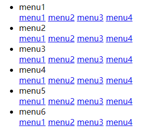
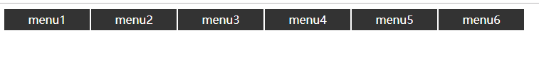
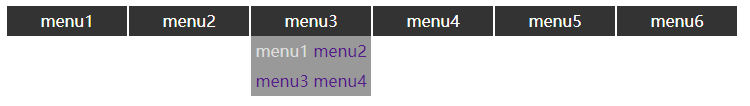

自定义jQuery插件需要了解：
$.extend({函数名:function(){功能代码}});
使用时：$.函数名();$.fn.extend({函数名:function(){功能代码}});
使用时:$("选择元素").函数名();创建插件名.js文件
创建页面名.css文件
然后引入html中
<!-- 引入创建的名为myPlugin-menu的css -->
<link rel="stylesheet" type="text/css" href="../css/myPlugin-menu.css"/>
<!-- 引入jQuery库，必须在前面，后面的插件文件基于jQuery -->
<script src="../js/jquery-1.11.3.js" type="text/javascript" charset="utf-8"></script>
<!-- 引入创建的名为jquery-myPluginmenu-1.0.js -->
<script src="../js/jquery-myPluginmenu-1.0.js" type="text/javascript" charset="utf-8"></script>现在先写出所需基本html代码
一个div里面包含一个ul六个li标签
<body>
<div id="menu"> <!-- id设置为menu -->
<ul>
<li>menu1
<div>
<a href="#">menu1</a>
<a href="#">menu2</a>
<a href="#">menu3</a>
<a href="#">menu4</a>
</div>
</li>
<li>menu2
<div>
<a href="#">menu1</a>
<a href="#">menu2</a>
<a href="#">menu3</a>
<a href="#">menu4</a>
</div>
</li>
<li>menu3
<div>
<a href="#">menu1</a>
<a href="#">menu2</a>
<a href="#">menu3</a>
<a href="#">menu4</a>
</div>
</li>
<li>menu4
<div>
<a href="#">menu1</a>
<a href="#">menu2</a>
<a href="#">menu3</a>
<a href="#">menu4</a>
</div>
</li>
<li>menu5
<div>
<a href="#">menu1</a>
<a href="#">menu2</a>
<a href="#">menu3</a>
<a href="#">menu4</a>
</div>
</li>
<li>menu6
<div>
<a href="#">menu1</a>
<a href="#">menu2</a>
<a href="#">menu3</a>
<a href="#">menu4</a>
</div>
</li>
</ul>
</div>
</body>初始界面如下：

在名为myPlugin-menu的css中写入样式
/* 设置一个类名sunmenu */
/* 找到menu里面的ul */
.sunmenu >ul{
margin: 0px; /* 外边距 */
padding: 0px; /* 内边距 */
list-style: none; /* 列表属性 */
}
/* 找到ul里的li */
.sunmenu >ul >li{
float: left; /* 左浮动 */
display: inline-block; /* 水平居中显示 */
width: 120px; /* 宽度 */
height: 30px; /* 高度 */
line-height: 30px; /* 行高 */
background-color: #333333; /* 背景颜色 */
color: #FFFFFF; /* 字体颜色 */
text-align: center; /* 文本居中 */
margin-right: 2px; /* 右边距 */
}
/* 找到li里的div */
.sunmenu > ul>li>div{
width: 120px; /* 宽度 */
background-color: #999999; /* 背景颜色 */
position: absolute; /* 相对定位 */
}
/* 找到div里的a */
.sunmenu >ul>li>div a:link{
text-decoration: none;/* 文本修饰 去掉下划线 */
}
.astyle{
color: #DDDDDD; /* 字体颜色 */
}我们需要用js来调用这些样式，让它们隐藏或是显示。
在创建的插件.js中以成员函数的形式来设置插件:
//以成员函数形式设置插件
(function($){
$.fn.extend({
submenu:function(){
//添加样式
this.addClass("sunmenu");
//隐藏div
this.find("ul>li>div").hide();
//当鼠标经过li时
this.find("ul>li").on("mouseover",function(){
//此处的this表示事件源
$(this).find("div").show(); //显示div
//当鼠标离开li时
}).on("mouseout",function(){
$(this).find("div").hide(); //隐藏div
});
//再给a标签添加一个鼠标移入移出事件
$("a").mouseover(function(){
$(this).addClass("astyle");
}).mouseout(function(){
$(this).removeClass("astyle");
})
return this; //为了支持链式操作 要返回当前对象
}
})
})(jQuery);最后在HTML中运行自定义的插件：
<script type="text/javascript">
$(function(){
$("#menu").submenu();//选择id为menu的元素调用成员函数submenu
})
</script>运行结果：

当鼠标移入移出时：

如果觉得有用不妨点个赞:D